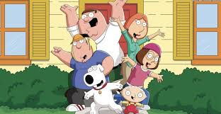

Family Guy is an American animated sitcom created by Seth MacFarlane for the Fox Broadcasting Company. The series premiered on January 31, 1999, following Super Bowl XXXIII, with the rest of the first season airing from April 11, 1999. The show centers around the Griffins, a dysfunctional family consisting of parents Peter and Lois, their children, Meg, Chris, and Stewie, and their anthropomorphic pet dog, Brian. Set in the fictional city of Quahog, Rhode Island, the show exhibits much of its humor in the form of metafictional cutaway gags that often lampoon American culture. The family was conceived by MacFarlane after he developed two animated films, The Life of Larry and Larry & Steve. MacFarlane redesigned the films' protagonist, Larry, and his dog, Steve, and renamed them Peter and Brian, respectively. MacFarlane pitched a seven-minute pilot to Fox in December 1998, and the show was greenlit and began production. Family Guy's cancellation was announced shortly after the third season had aired in 2002, with one unaired episode eventually premiering on Adult Swim in 2003, finishing the series' original run. Favorable DVD sales and high ratings from syndicated reruns since then convinced Fox to revive the show in 2004; a fourth season began airing the following year, on May 1, 2005. Since its premiere, Family Guy has received generally positive reviews. In 2009, it was nominated for a Primetime Emmy Award for Outstanding Comedy Series, the first time an animated series had been nominated for the award since The Flintstones in 1961. In 2013, TV Guide ranked Family Guy as the ninth-greatest TV cartoon. The series has also garnered considerable amounts of criticism and controversy, ranging from storylines and character stereotypes, to allegations of racism, homophobia, and misogyny. Many tie-in media based on the show have been released, including Stewie Griffin: The Untold Story, a straight-to-DVD special released in 2005; Family Guy: Live in Vegas, a soundtrack-DVD combo released in 2005, featuring music from the show as well as music created by MacFarlane and Walter Murphy; a video game and pinball machine, released in 2006 and 2007, respectively; since 2005, six books published by Harper Adult; and Laugh It Up, Fuzzball: The Family Guy Trilogy (2010), a collection of three episodes parodying the original Star Wars trilogy. A spin-off series, The Cleveland Show, featuring Cleveland Brown, aired from September 27, 2009, to May 19, 2013. On January 26, 2023, Fox announced that the series had been renewed for seasons 22 and 23, taking the show through the 2024–25 television season. Season 22 premiered on October 1, 2023. Family Guy moved to Wednesday nights beginning March 6, 2024, marking the show's first weeknight airings since 2002.
The show centers around the adventures and activities of the dysfunctional Griffin family, consisting of father Peter Griffin, a bumbling and clumsy yet well-intentioned blue-collar worker; his wife Lois, a stay-at-home mother and piano teacher (in early episodes) who is a member of the affluent Pewterschmidt family; Meg, their often bullied teenage daughter who is constantly ridiculed or ignored by the family; Chris, their awkward teenage son, who is overweight, unintelligent, unathletic, and in many respects a younger version of his father; and Stewie, their diabolical infant son of ambiguous sexual orientation who is an adult-mannered evil genius and uses stereotypical archvillain phrases. Living with the family is their witty, smoking, martini-swilling, sarcastic, English-speaking anthropomorphic dog Brian, although he is still considered a pet in many ways. Recurring characters appear alongside the Griffin family. These include the family's neighbors: sex-crazed airline pilot bachelor Glenn Quagmire; deli owner/mail carrier Cleveland Brown and his wife Loretta (later Donna); paraplegic police officer Joe Swanson, his wife Bonnie, their son Kevin and their baby daughter Susie; neurotic Jewish pharmacist Mort Goldman, his wife Muriel, and their geeky and annoying son Neil, and elderly child molester Herbert. TV news anchors Tom Tucker and Diane Simmons, Asian reporter Tricia Takanawa, and Blaccu-Weather meteorologist Ollie Williams also make frequent appearances. Actor James Woods guest stars as himself in multiple episodes, as did Adam West, prior to his death.
Back to the top